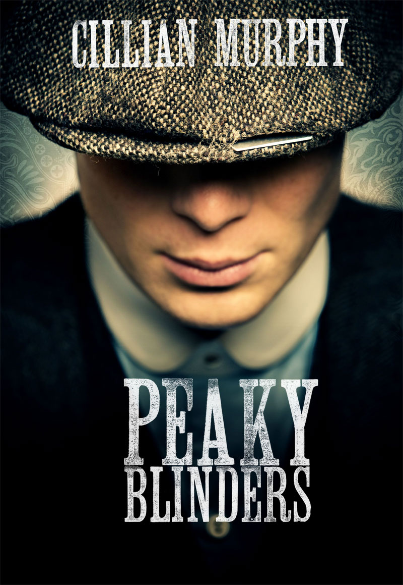

Peaky Blinders is a gangster family epic set in Birmingham, England in 1919, several months after the end of the First World War in November 1918. The story centres on the Peaky Blinders gang and their ambitious and highly cunning boss Tommy Shelby. The gang comes to the attention of Chief Inspector Major Chester Campbell, a detective in the Royal Irish Constabulary sent over by Winston Churchill from Belfast, where he had been sent to clean up the city of the Irish Republican Army (IRA), Communists, gangs and common criminals. Winston Churchill charged him with suppressing disorder and uprising in Birmingham and recovering a stolen cache of arms meant to be shipped to Libya. The first series concludes on 3 December 1919 – "Black Star Day", the event where the Peaky Blinders plan to take over Billy Kimber's betting pitches at the Worcester Races. 